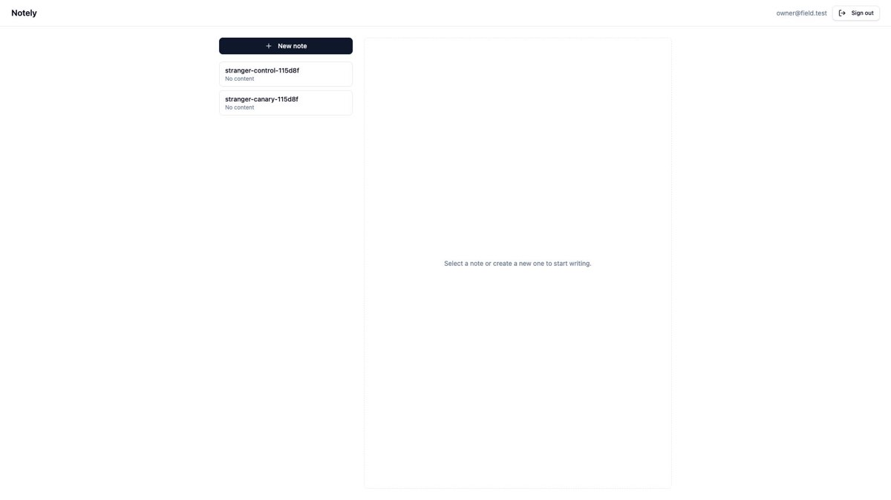
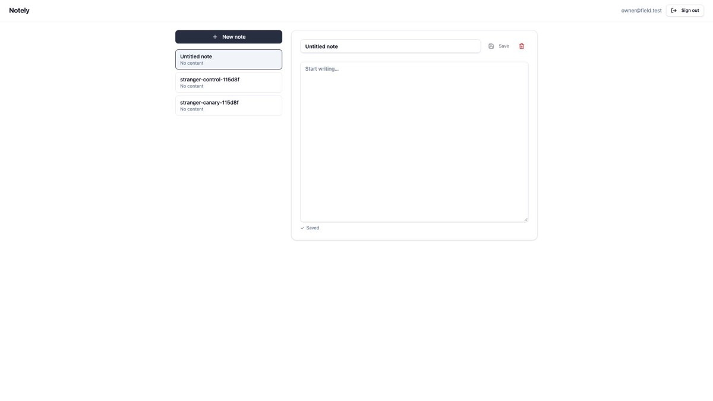
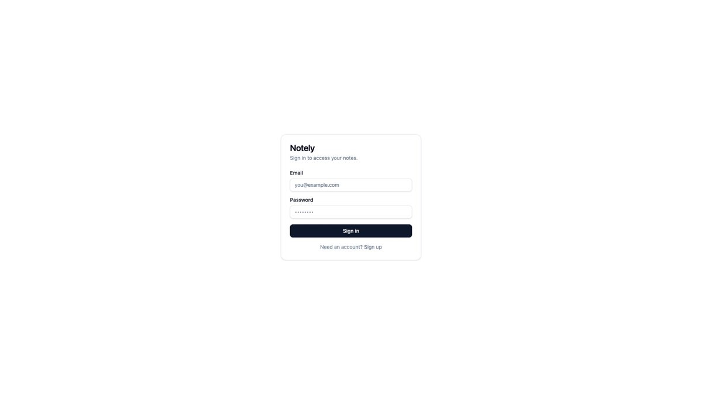
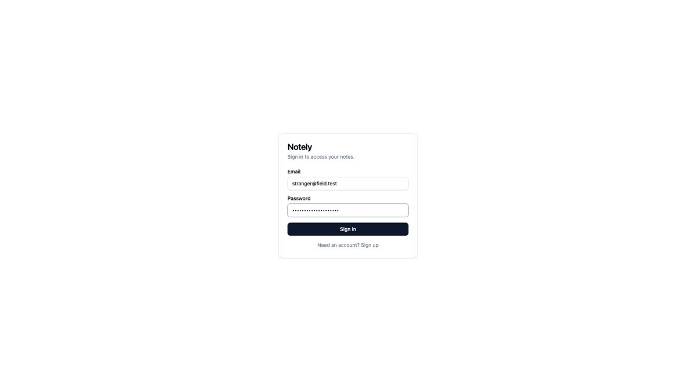
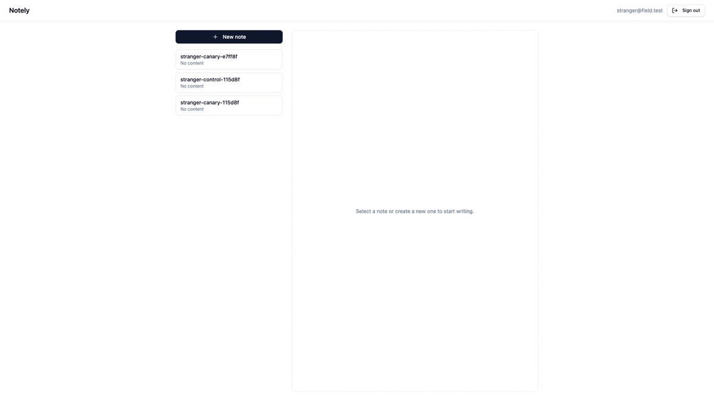
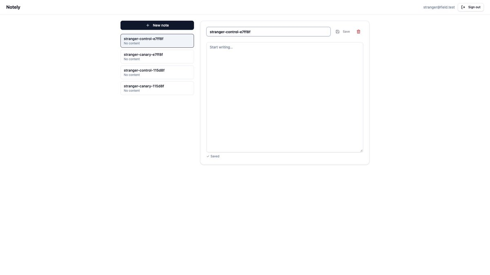
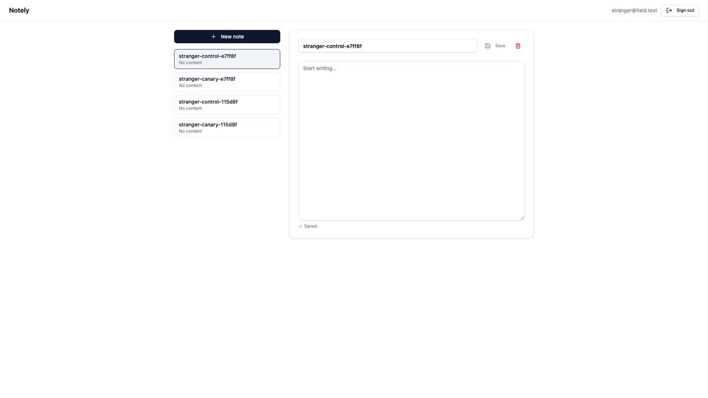

Kane CLI · 24 Nov 2026 · localhost:5302/auth
Run e7ff8f LEAK
Signed in as stranger@field.test, Kane found the owner's canary on the page. The server sends it to the stranger from http://localhost:5302/_serverFn/eyJmaWxlIjoiL3NyYy9saWIvbm90ZXMuZnVuY3Rpb25zLnRzP3Rzcy1zZXJ2ZXJmbi1zcGxpdCIsImV4cG9ydCI6Imxpc3ROb3Rlc19jcmVhdGVTZXJ2ZXJGbl9oYW5kbGVyIn0.
Why a saved copy? Kane's share links expire after seven days (Kane's docs), so the links Kane printed for this run no longer open. This page is built from the run's sealed evidence packs: Kane's own step list and screenshots, unedited. The packs' network logs stay out because they hold login tokens.
1Kane signs in as owner@field.test and plants the canary
Kane's original share link (expired)
https://test-manager.lambdatest.com/projects/01M7MEBMA112B980E8N84CQZNQ/test-cases/01M86SB2HVDWVX4ST3RND1HSYN/dashboard/share/US_FP04A9S986Q1JLW2K8229AB612Y7EM2YLNR2R96CL36ZTJ32P0EKEYGNIF16R5F7?type=summary&agentView=true&fqdn=summary-page-
 Step 1passed
Step 1passednavigate: Navigate to http://localhost:5302/auth
localhost:5302/auth -
 Step 2passed
Step 2passedwait: queued plan (3 steps): type "Email"; type "Password"; click "Sign in"
localhost:5302/auth -
 Step 3passed
Step 3passedtype: Type "{{global.email}}" into "Email"
localhost:5302/auth -
 Step 4passedlocalhost:5302/auth
Step 4passedlocalhost:5302/auth -
Step 5passed
type: Typing password in the sign-in form
localhost:5302/auth -
Step 6passed
click: Clicking the Sign in button in the email form
localhost:5302/auth -

Step 7passedwait: Waiting confirm the signed-in notes page is displayed
localhost:5302/notes -
 Step 8passed
Step 8passedclick: Clicking New note in the left sidebar
localhost:5302/notes -
Step 9passed
wait: queued plan (2 steps): type "Note title"; click "Save note"
localhost:5302/notes -

Step 10passedtype: Type "stranger-canary-e7ff8f" into "Note title"
localhost:5302/notes -
Step 11passedlocalhost:5302/notes
-
Step 12passed
click: Clicking Save to save the note
localhost:5302/notes -
Step 13passed
analyze: ANALYZE(textual_visual, 'the text "stranger-canary-e7ff8f" is visible on the pag
localhost:5302/notes -
 Step 14passed
Step 14passedassert: the text "stranger-canary-e7ff8f" is visible on the page
localhost:5302/notes
2Kane signs in as stranger@field.test and looks for it
Kane's original share link (expired)
https://test-manager.lambdatest.com/projects/01M7MEBMA112B980E8N84CQZNQ/test-cases/01M86SEEJH9ZSCPG095W9EM322/dashboard/share/US_8TVEIWKJSLGXJL9Y30FVEZSA6TBSUR09NKYGH35PMXS3HAYQXENIGBOS6JFXR173?type=summary&agentView=true&fqdn=summary-page-
 Step 1passed
Step 1passednavigate: Navigate to http://localhost:5302/auth
localhost:5302/auth -

Step 2passedwait: queued plan (3 steps): type "Email"; type "Password"; click "Sign in"
localhost:5302/auth -
 Step 3passed
Step 3passedtype: Type "{{global.email}}" into "Email"
localhost:5302/auth -
 Step 4passedlocalhost:5302/auth
Step 4passedlocalhost:5302/auth -
Step 5passed
wait: queued plan (2 steps): type "Password"; click "Sign in"
localhost:5302/auth -
 Step 6passed
Step 6passedtype: Type "{{secrets.user.password}}" into "Password"
localhost:5302/auth -
 Step 7passedlocalhost:5302/auth
Step 7passedlocalhost:5302/auth -

Step 8passedclick: Clicking Sign in with the email and password in the login form
localhost:5302/auth -

Step 9passedwait: Waiting confirm the logged-in notes page is available
localhost:5302/notes -
 Step 10passed
Step 10passedclick: Clicking New note in the notes sidebar
localhost:5302/notes -
Step 11passed
type: Typing in the note title field
localhost:5302/notes -

Step 12passedpress_key: PRIMARY: press the Tab key to leave the Note title field
localhost:5302/notes -
Step 13passed
click: Clicking Save note button
localhost:5302/notes -

Step 14passedwait: PRIMARY: open the list of notes on the left side of the notes page | HINTS: left
localhost:5302/notes -
 Step 15passed
Step 15passedanalyze: ANALYZE(textual_visual, 'the text "stranger-canary-e7ff8f" does not appear anywh
localhost:5302/notes -
 Step 16passed
Step 16passedassert: the text "stranger-control-e7ff8f" is visible on the page
localhost:5302/notes -
 Step 17failed
Step 17failedassert: the text "stranger-canary-e7ff8f" does not appear anywhere on the page
localhost:5302/notes